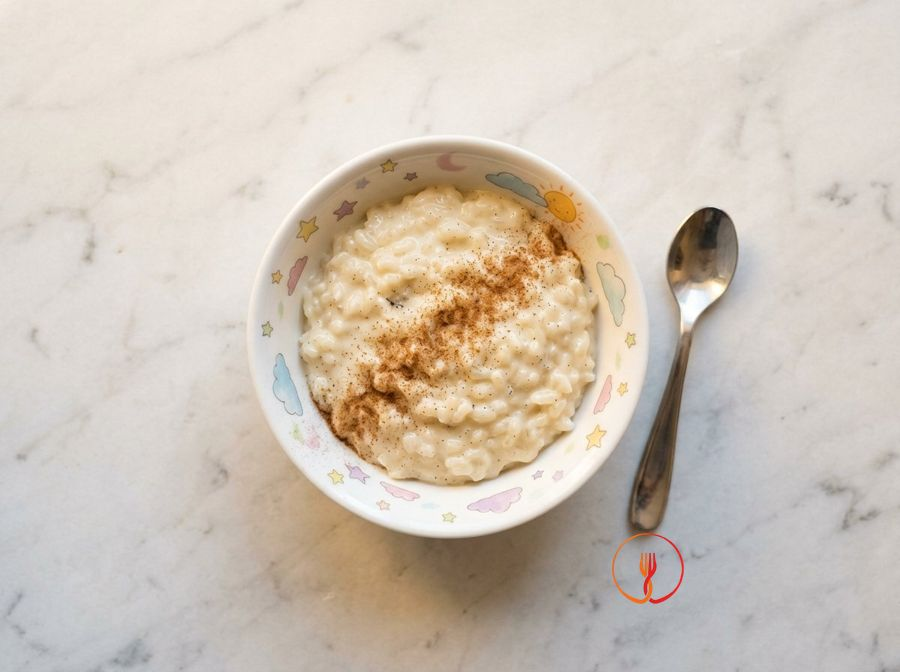

Budino di riso al latte
Riso cotto lentamente nel latte con vaniglia e un velo di cannella, cremoso e delicato. Attenzione: contiene latte.
Un dolce al cucchiaio tradizionale, cremoso e avvolgente, che ricorda i sapori di una volta. La cottura lenta del riso nel latte sprigiona gli aromi della vaniglia e della cannella in un connubio perfetto.
Ingredienti
- Riso originario80 g
- Latte intero600 ml
- Zucchero25 g
- Baccello di vaniglia1 g
- Cannella in polvere0,5 g
Allergeni
Latte
Procedimento
- Versa 600 ml di latte intero in un pentolino dal fondo spesso e aggiungi il baccello di vaniglia da 1 g dopo averlo inciso longitudinalmente. Scalda a fuoco medio finché non vedi le prime bollicine salire in superficie, facendo molta attenzione a non farlo traboccare. Questo passaggio è fondamentale per permettere al calore di estrarre tutto l'aroma naturale e i semi della vaniglia.
- Appena il latte raggiunge il bollore, versa a pioggia gli 80 g di riso originario, una varietà a chicco tondo ideale per questa preparazione grazie alla sua capacità di rilasciare amido. Abbassa immediatamente la fiamma al minimo, poiché una cottura lenta e dolce è il segreto per ottenere la cremosità tipica di un vero budino casalingo.
- Cuoci il riso per circa 30-35 minuti complessivi, ricordandoti di mescolare frequentemente con un cucchiaio di legno per evitare che i chicchi si attacchino al fondo del pentolino. Noterai che, con il passare dei minuti, il latte inizierà a ridursi e a velare il cucchiaio, diventando via via più denso e profumato.
- Continua la cottura mantenendo un bollore appena accennato, quasi un sussulto, finché il riso non risulterà molto tenero ma ancora integro nella forma. La consistenza finale in pentola deve apparire simile a quella di un risotto molto 'all'onda', poiché il budino tenderà a rassodarsi ulteriormente durante la fase di raffreddamento.
- Quando mancano circa 5 minuti al termine della cottura (intorno al trentesimo minuto), aggiungi i 25 g di zucchero e mescola con cura per farlo sciogliere completamente. Inserire lo zucchero solo verso la fine evita che il latte si scurisca eccessivamente o che il riso faccia fatica a cuocere correttamente a causa della densità dello sciroppo.
- Spegni il fuoco e rimuovi con delicatezza il baccello di vaniglia, assicurandoti di raschiarlo bene per lasciare tutti i puntini neri nel latte. Il profumo sarà ora intenso e avvolgente, mentre il colore del composto avrà assunto una bellissima sfumatura bianco avorio molto invitante.
- Distribuisci il composto ancora ben caldo in 4 coppette individuali, livellando la superficie con il dorso di un cucchiaio se necessario. Lascia riposare il budino a temperatura ambiente per qualche minuto affinché il calore si stabilizzi e la struttura del riso diventi perfettamente vellutata al palato.
- Completa ogni porzione spolverizzando in modo uniforme gli 0,5 g di cannella in polvere sulla superficie, che aggiungerà una nota speziata e decorativa. Puoi scegliere di servire il tuo budino di riso ancora tiepido per un effetto comfort food, oppure riporlo in frigorifero se preferisci un dessert più compatto e rinfrescante.
Consigli
- Usa un pentolino dal fondo spesso per evitare che il riso si attacchi o il latte bruci.
- Mescola frequentemente durante la cottura per favorire il rilascio degli amidi e ottenere una consistenza vellutata.
- Servi il budino tiepido o freddo, a seconda della stagione e dei tuoi gusti.
Varianti
- Guarnisci con una spolverata extra di cannella appena prima di servire per un aroma più intenso.
- Incorpora delle scorzette d'arancia durante la bollitura per un tocco mediterraneo profumato.
Valori nutrizionali (stima)
| Per porzione (155 g) | Per 100 g | |
|---|---|---|
| Energia | 787 kJ / 188 kcal | 506 kJ / 121 kcal |
| Proteine | 6.5 g | 4.2 g |
| Carboidrati | 30 g | 19 g |
| di cui zuccheri | 13 g | 8.6 g |
| Grassi | 5.4 g | 3.5 g |
| di cui saturi | 3.3 g | 2.1 g |
| Fibre | 0.3 g | 0.2 g |
| Sale | 0.1 g | 0.1 g |
Valori stimati con l'AI su dati medi CREA / USDA: sono indicativi e non sostituiscono il parere di un medico o di un nutrizionista.
Apri la ricetta nell'app per la lista della spesa, le schede ingredienti e i negozi vicini.